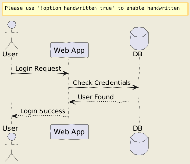

AI Architecture
Diagram Generator
Turn plain English into production-ready architecture diagrams in seconds. Powered by AI and PlantUML — no drag-and-drop, no manual drawing, just describe and generate.
New: Freehand whiteboard drawing — sketch diagrams your way, completely freeWe are growing with you. Use us at zero cost — no credit card required or any payment to get started.
Trusted by teams at
Generate a Diagram
Describe your architecture below and watch it come to life.
Try an example:
Your diagram will appear here
Describe your architecture and click Generate to create a PlantUML diagram.
Generating PlantUML code...

Oops! That's a tricky one.
Can you tweak your prompt and hit Generate again? A little more context usually does the trick.
No diagrams yet
Built for engineers who ship fast
Stop spending hours in drawing tools. Describe what you're building and get a diagram that's actually useful.
AI-Powered Generation
Describe your architecture in plain English. Our AI understands cloud services, microservices, databases, queues, and generates accurate PlantUML code instantly.
Edit Before Rendering
Review and tweak the generated PlantUML code before rendering. Full control over every component, relationship, and label. Re-render without hitting the AI again.
Export Anywhere
Download as PNG or SVG. Drop into Confluence, Notion, README files, or presentations. Clean, professional diagrams every time — with official AWS, GCP, and Azure icons.
Iterative Refinement
Not quite right? Refine your prompt and regenerate. Add a cache layer, swap databases, change the flow — iterate until it matches your mental model perfectly.
Privacy First
Diagrams are generated on the fly and delivered directly to your browser. Logged-in users get their history saved — anonymous sessions leave no trace.
Persistent History
Every diagram you generate is saved. Logged-in users get full history across sessions — go back, restore, and re-render any past diagram from any device.
Three steps. That's it.
From idea to a polished architecture diagram in under 10 seconds.
Describe
Write what you're building in plain English. "AWS VPC with ECS, ALB, and RDS" — that's all it takes. Be as detailed or as brief as you want.
Generate
Hit Generate. AI converts your description into PlantUML code. Review it, edit if needed, or let it render automatically. You stay in control.
Download
Export as PNG or SVG. Drop it in your docs, share with the team, or iterate further. Professional diagrams — no Lucidchart subscription needed.
See What It Creates
Each diagram below was generated by describing the architecture in plain English — nothing else.
Generate Yours →Engineers love it
Hear from the teams using SketchMyInfra to document their infrastructure.
"We used to spend 30 minutes per diagram in Lucidchart. Now our SREs describe the architecture and have a diagram in 5 seconds. It's changed how we do design reviews."
Priya Raghavan
Staff SRE, Fintech Startup
"I was skeptical, but the PlantUML output is surprisingly accurate. It even uses the right AWS icons. I used it to document our entire ECS migration in an afternoon."
Marcus Chen
DevOps Lead, Series B SaaS
"Finally, a tool that understands my intent. I typed 'Kubernetes cluster with ingress, 3 deployments, and a managed Postgres' and got exactly what I needed for our RFC."
Sarah Kim
Platform Engineer, E-commerce
From the Blog
Thoughts on infrastructure, diagrams, and DevOps.
The 30-Minute Lie
Why your architecture diagram is already out of date — and what to do about it.
The Last Manual Artifact
Architecture diagrams are the last thing engineers maintain by hand. They shouldn't be.
Your Architecture Diagram Is Lying to You
How manual diagrams drift from reality — and how AI generation keeps them honest.